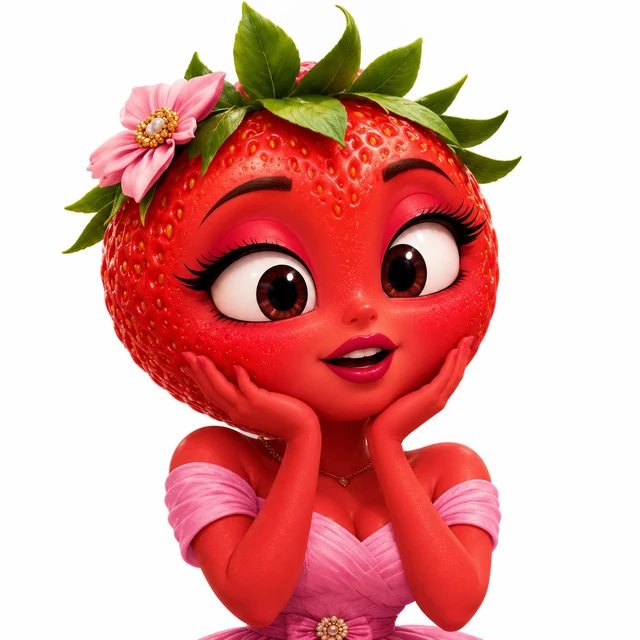
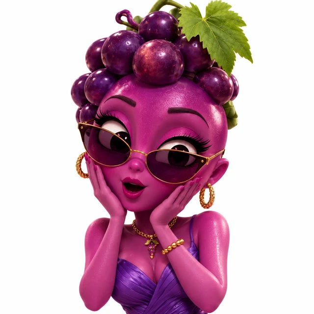
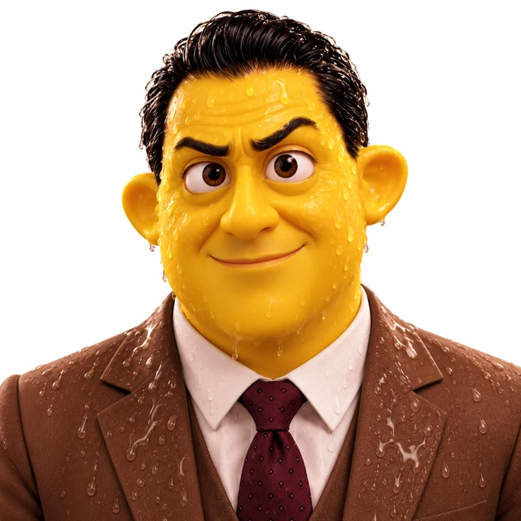

Fresa
Consumidora de fast fashion que aprende a comprar de manera consciente.
CONSUMO Y MEDIO AMBIENTE
Título provisional
Fresa sigue las tendencias y Plátano compra ropa para complacerla. El descubrimiento de Mora los lleva a cuestionar sus hábitos y a buscar alternativas más sostenibles.
UNA FRUTINOVELA DE THE NEBULA SOCIETY
Explorar episodio01 / LA HISTORIA
SINOPSIS
Fresa está obsesionada con seguir las tendencias de moda. Mora le presenta una nueva colección y Plátano compra constantemente ropa para complacerla. Cuando Mora descubre el impacto ambiental de la moda rápida, decide revelar lo que sucede. Fresa confronta a Don Limón, dueño de la tienda, y cuestiona sus prácticas. Finalmente, Fresa y Plátano reflexionan sobre sus hábitos de compra y deciden apoyar alternativas más sostenibles.
PRODUCIDA POR THE NEBULA SOCIETY
FORMATO VERTICAL / 9:16
Sin reproducción automática
CHANGE LAB / FRUTINOVELA
No se pudo cargar la frutinovela.
Comprueba tu conexión e intenta cargar la página de nuevo.
Una historia de ficción sobre fast fashion.
Leer la transcripción de la frutinovela02 / PERSONAJES DE LA HISTORIA

Consumidora de fast fashion que aprende a comprar de manera consciente.

Amiga que descubre el impacto ambiental de la moda rápida y decide darlo a conocer.
Novio de Fresa, que gasta sus ahorros comprándole ropa y luego reflexiona sobre sus decisiones.

Dueño de la tienda, que termina reconociendo la necesidad de cambiar su negocio.
03 / DETRÁS DE LA HISTORIA
Es un modelo de producción y comercialización de ropa que busca ofrecer nuevas tendencias de manera rápida y a bajo costo, generalmente impulsando ciclos de consumo frecuentes.
La producción textil requiere recursos como agua y energía. Además, el consumo excesivo de prendas puede aumentar los residuos y la contaminación.
Las condiciones laborales dentro de las cadenas de producción también son una preocupación importante, especialmente cuando no existen medidas adecuadas para proteger los derechos de los trabajadores.
Comprar de manera consciente, reparar prendas, intercambiar ropa y prolongar su uso son algunas formas de reducir el consumo innecesario.
04 / REFLEXIONA
Elige una opción y comprueba tu respuesta. Puedes cambiarla y volver a intentarlo.
Esta actividad invita a reflexionar; no mide tu conciencia social. Tus respuestas no se guardan.
Para responder y recibir retroalimentación, abre esta página con JavaScript habilitado. También puedes reflexionar sobre estas preguntas:
05 / PROFUNDIZA
La producción y el consumo acelerado de prendas generan preguntas importantes sobre sostenibilidad y condiciones laborales.
Uso de recursos y generación de residuos textiles. Al investigar una prenda, pregunta por sus materiales, su proceso de producción y qué ocurre cuando deja de usarse.
La compra frecuente y los ciclos de tendencias pueden impulsar decisiones apresuradas. Revisa lo que ya tienes y considera la duración, el cuidado y el uso que darás a una prenda antes de comprar.
Reparar, reutilizar, intercambiar y comprar conscientemente. Organiza un intercambio de ropa en buen estado o aprende una reparación sencilla para prolongar su vida útil.
Investiga quién produce la ropa y qué información ofrece la marca sobre sus proveedores y las condiciones de trabajo. Distingue los compromisos publicitarios de la información comprobable sobre derechos laborales.
¿Cómo podríamos prolongar la vida útil de nuestra ropa?
06 / ACTÚA
No necesitas renovar tu ropa constantemente para expresar tu estilo. Reparar, reutilizar, intercambiar y elegir prendas duraderas son formas de consumir con mayor conciencia.
Repara prendas que todavía puedes utilizar.
Reutiliza y combina la ropa que ya tienes.
Intercambia prendas en buen estado.
Piensa antes de comprar algo nuevo.
07 / SIGUE EXPLORANDO
001 / SOCIEDAD Y COMUNIDAD
El precio del dinero fácil
Explorar Pandillaje ↗003 / CONVIVENCIA DIGITAL
Detrás de cada pantalla
Explorar Ciberacoso ↗